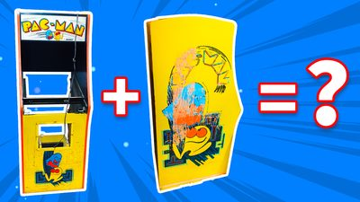
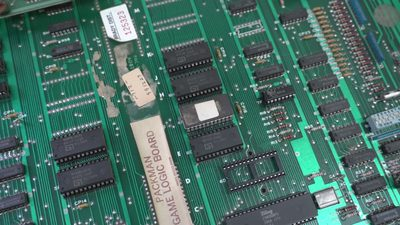
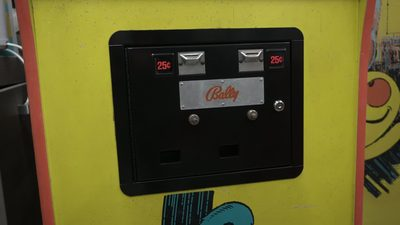
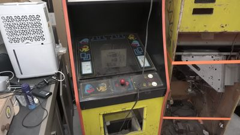
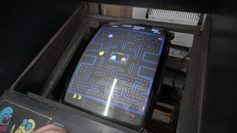
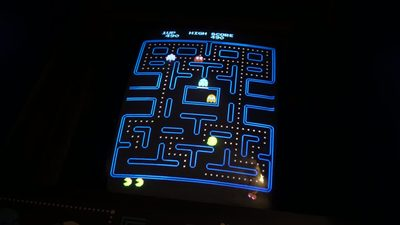

$ cd ~/projects/pac-man
> Pac-Man Restoration_
Aug 2024 - Nov 2024
I restored an original 1980 Pac-Man arcade cabinet from two wrecked ones. One cabinet had a decent body with its marquee, bezel and control panel, but no screen, no game board and no coin door. The other was falling apart, with a swollen top, a bottom plate that was mostly gone and ruined side art, but it still held a working CRT screen and the game's circuit board. The plan was to put the good parts of both into the better cabinet and keep everything as original as possible. I made a video about the whole restoration on my YouTube channel Overtinker.
After a thorough clean, I checked the fuses and the power supply and powered everything up for the first time, through a transformer, as the cabinet came from the US and runs on 110V. The game and the screen worked. Joystick and buttons needed small repairs: a loose wire on a leaf switch and a broken start button. Then I found that the game ran far too fast. Operators used to modify Pac-Man this way so players lost their quarters sooner. The culprit was a modified ROM chip on the game board. To put the original code back, I programmed a new 2532 ROM with an open source ROM programmer and an Arduino, erasing the old chip with UV light first. After that, Pac-Man was back to its normal speed.
The rest was careful restoration work. I combined the best parts of both control panels and painted the rusty joystick frame. I cleaned the 40-year-old paint with a wet rag and, as a last step, a magic eraser. I took the coin door apart, sanded it to bare metal, sprayed it and riveted its plate back on. The marquee brackets got the same treatment. The screen had lost its green, which turned out to be a cracked solder joint on the video header, fixed by reflowing the solder. I kept the old T-molding and the control panel overlay on purpose, as they show the cabinet's age.






